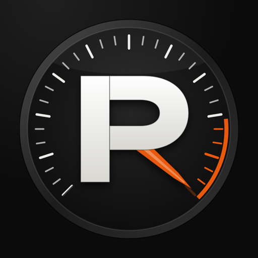

L'app motoUne boucle. Un tap. On roule.
Dis combien de temps tu as et quelles routes tu aimes : RideKit trace la boucle depuis là où tu es, te guide, et garde ta balade dans ton carnet.
Ce que fait RideKit
Tout ce qui suit est dans l'app aujourd'hui.
Des boucles sur mesure
Une durée, des routes rapides ou à virages, plus ou moins de relief. Sans autoroutes, péages, chemins de terre, ferries ou tunnels si tu préfères.
Le guidage
Tour par tour, même écran verrouillé, avec recalcul si tu sors de la route. La limitation de vitesse s'affiche, une phrase te prévient si tu la dépasses (un bip si la voix est coupée).
De A à B, ou ta trace
Un itinéraire vers une destination, ou une trace GPX, KML ou TCX importée, à suivre dans un sens ou dans l'autre. Avec RideKit Pro, itinéraires et balades s'exportent en GPX.
Sur ta route
Les cols et les sites à voir le long de la balade, les stations-service avec le prix du jour en France.
La météo pour rouler
Prévisions heure par heure, le meilleur créneau, le radar de pluie, la météo des cols autour de toi.
Hors réseau
Avec RideKit Pro, télécharge la carte d'une balade avant de partir : le guidage continue là où ça ne capte plus.
Zones de danger
En France, les zones de danger prévues par la loi, à partir de la liste officielle des radars fixes. Jamais l'emplacement d'un radar.
Carnet et garage
Tes balades, leurs kilomètres et leurs virages. Ta moto, son kilométrage, ses entretiens et leurs rappels.
Détection de chute
Avec RideKit Pro, si tu l'actives : après une chute probable, une alarme, puis un SMS avec ta position envoyé à ton contact d'urgence (un mobile de France métropolitaine), même si tu ne peux pas répondre. Une aide, pas un service de secours.
Tes données restent sur ton téléphone
- Pas de compte : tes balades, ta moto et tes réglages ne quittent pas ton téléphone. Seul le serveur d'alerte reçoit, au moment d'une alerte, de quoi prévenir ton contact, et n'en garde ni ta position ni le texte.
- En sortie de groupe, si tu l'acceptes, ta position est partagée avec le groupe pendant la sortie, sauf aux abords de ton départ et de l'arrivée, puis effacée.
- Pour calculer une route ou afficher la météo, l'app envoie des coordonnées aux services qui font le calcul — jamais ton nom.
- Aucune publicité dans l'app, aucune revente. La mesure des pubs, par AppsFlyer, seulement si tu l'acceptes, jamais avec ta position.